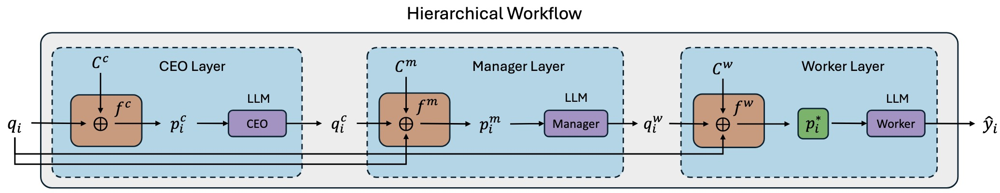

Method Overview

We propose modeling the prompt optimization problem as a zero-shot output within a multi-agent workflow. The initial query, qi, is first inputted into the first layer of our framework (the COE layer). Before being processed by the CEO LLM agent, qi is transformed into an LLM prompt pic by the prompter fc, which also concatenates it with the context Cc in the CEO layer. The output of the first layer, qic, serves as the query from the CEO layer to the Manager layer.
Similarly, the Manager Layer and the Worker Layer each include their own prompters, fm and fw, respectively. Besides concatenating the content of this layer, the initial query qi is also concatenated to enhance stability. The input for the Worker LLM is our optimized prompt Pi*, which directly triggers the LLM agent to generate the final response to the original query qi.